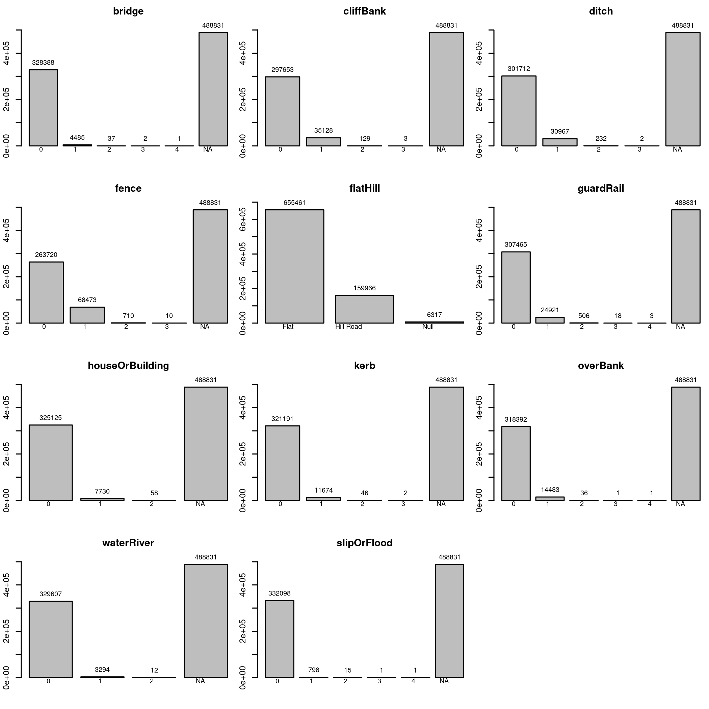
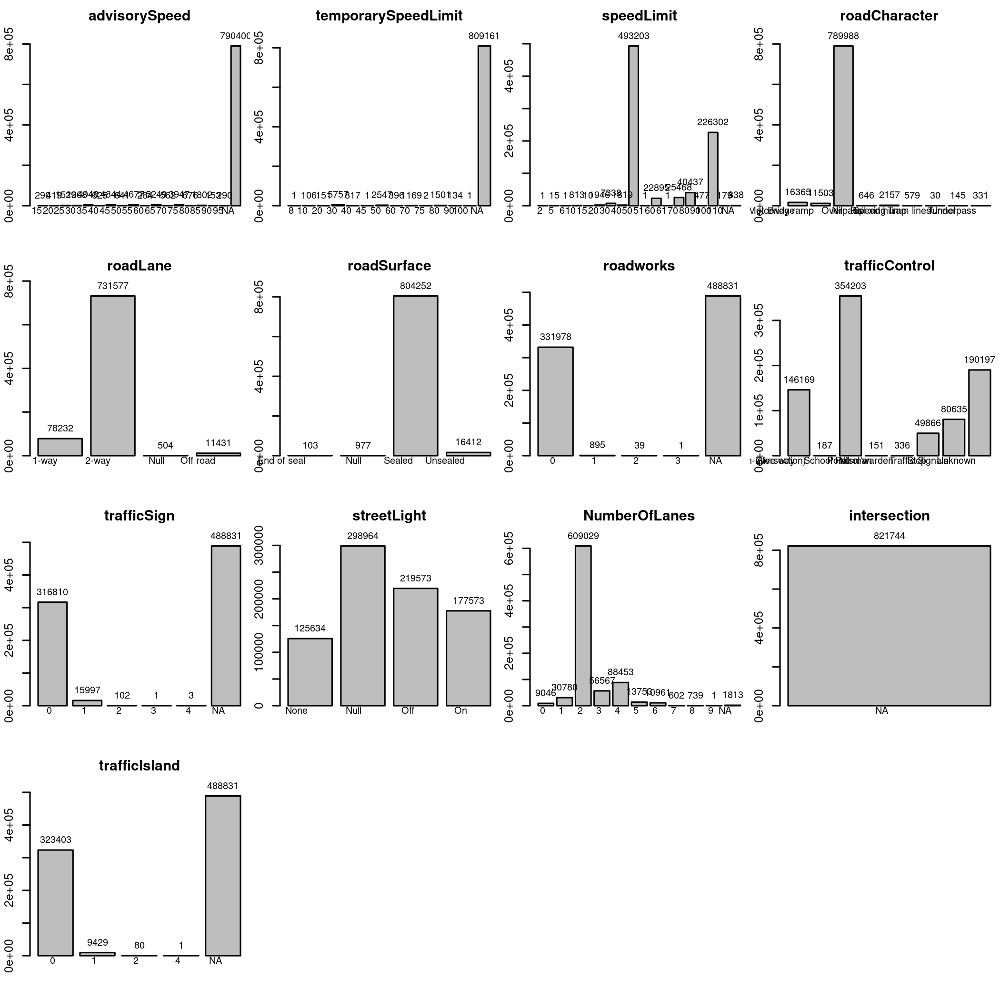
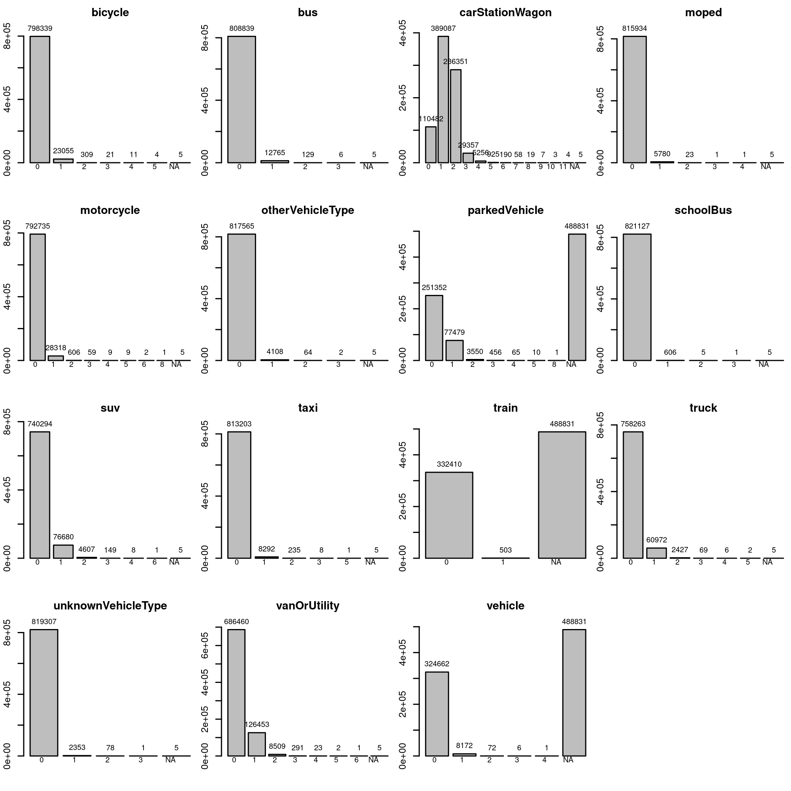
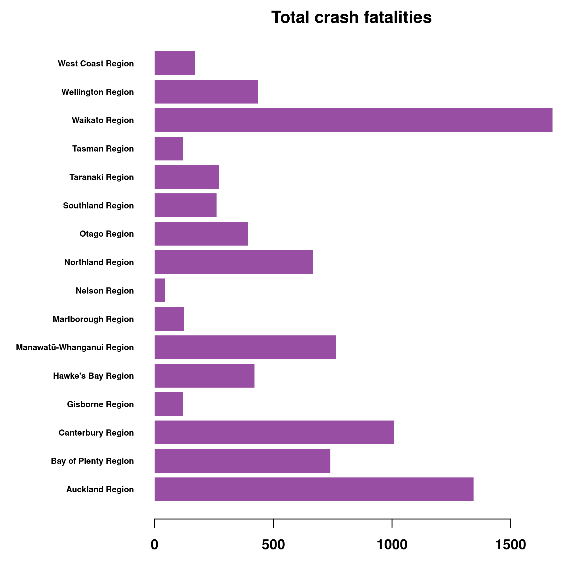
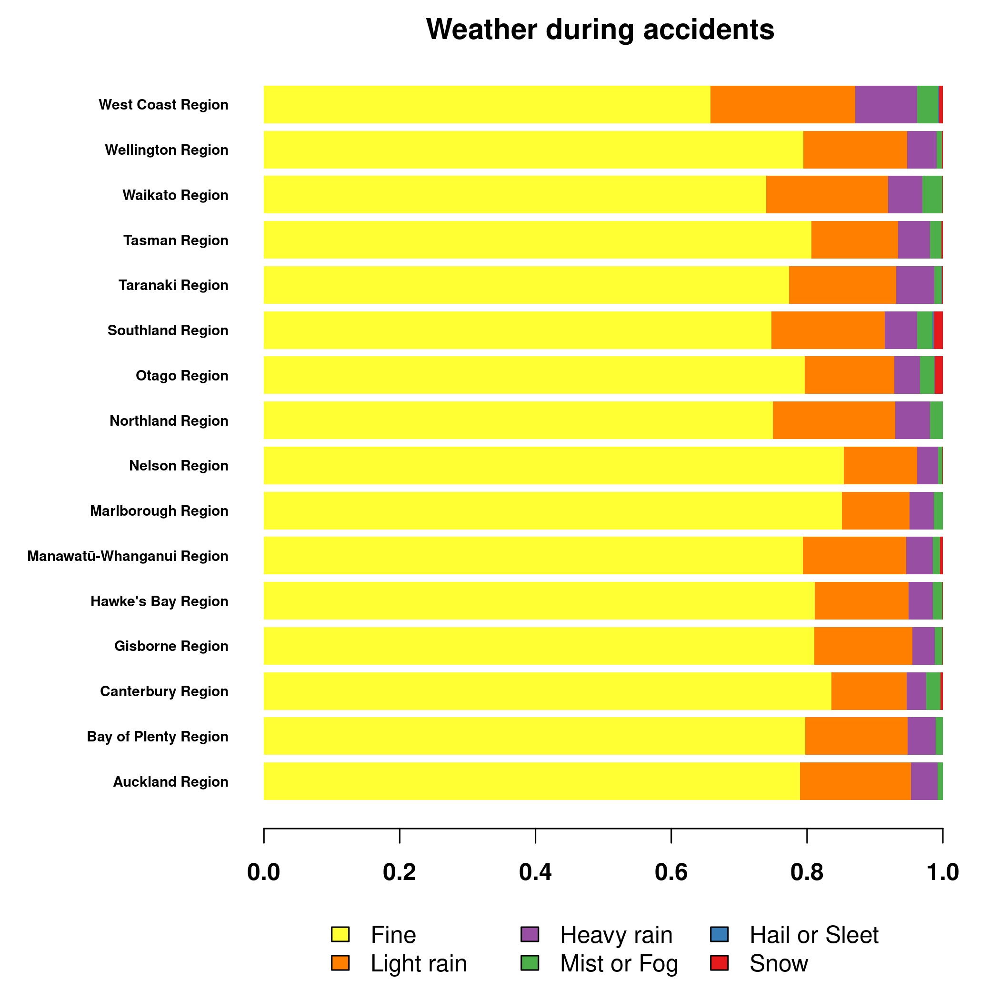
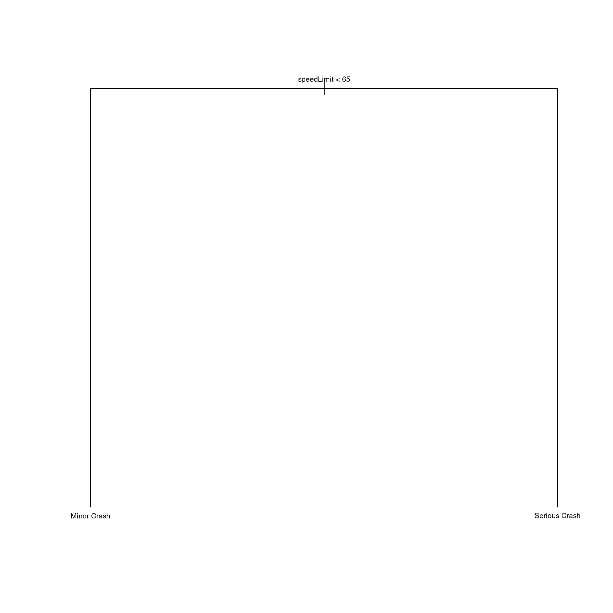

Exploratory Data Analysis: NZ Crash Data
Introduction
This is an Exploratory Data Analysis (EDA) for New Zealand Crash data. The aim of EDA is to explore data, find interesting patterns, and generate set of hypothesis that are worth to explore further, but also to find inconsistencies, coding errors, duplications and so on. For this reason, EDA is often the first step that needs to be done when looking at new data before other statistical or machine learning approaches are used. Ideally, EDA will be done in collaboration with a domain expert as many of the patterns or inconsistencies can be just a property of the data, be it from the way the data was collected, or expected patterns based on the mechanism that generate the data. Since these kind of patterns might influence the model-fitting and hypothesis testing steps later in the analysis, identifying these patterns and working with domain expert is an important step to get aware of these patterns so that they do not influence steps later and do not produce false positive relationships, or mask the true ones.
EDA is not a hard science, but more of an art, and there are no hard rules. While some tools for automatic EDA exist, see The Landscape of R Packages for Automated Exploratory Data Analysis for review, EDA is in its essence interactive. You are going through data, looking at various data points, features, and patterns, and searching for interesting questions and answers.
The history of EDA is interesting and its modern history starts with Tukey, but in truth, any data analysis starts with looking at patterns in the data and in truth, EDA is as old as statistics, and perhaps even predates it. After all, this is how Bayes came with, and Laplace rediscovered the Bayesian theorem, or how various probability distributions were invented/discovered. For a good review on statistics data science, and EDA, see 50 years of Data Science. Or you can go directly for the Future of Data Analysis from Tukey written in 1961. For a good tutorial for EDA, the R for Data Science from Hadley is a great source.
About this work
This work was done as a part of interview for the Data Analyst position with New Zealand Ministry of Transport and got me an offer. The task was to look at geographical patterns, but since this is my first time working with the data, I think that EDA is a must to familiarize oneself with the data and how the data are coded, because interpretation of the patterns will strongly depend on this.
All the code as well as a version of this document is available on my github. The crash data is quite large, so I didn’t include a copy of it here, but I did include copy of some population data we will use for normalization later.
EDA: NZ Crash Data
The purpose of this analysis is to explore New Zealand crash statistics data, and create insight on crashes by region, or other spatial area. And if we find some interesting relationship, we might try to do some little non-serious modelling. Why non-serious? Because we need domain expert to discuss the data with us, but we do not have a domain expert. Because of that, we do not know what are the limitations and assumptions in the data, so any modelling done in here is purely exploratory.
As pointed by the previous paragraph, there are some limitations. The challenge here is to do this in a limited time, so we will be able to do only very cursory exploration and look only at some overall patterns in the data, we won’t be going much into detail both by looking at year to year differences in various statistics, or by looking closely at small geographical areas, such as spikes in the city centres and so on. We also do not have a domain expert on hand, so we can’t discuss various findings, which means we do not know if any pattern we see is a true pattern, or just something resulting from the way the data way collected/encoded. This will be obvious quite later.
Finally, as this is exploratory analysis, do not expect high quality infographics. Quick and dirty graphs are what we are looking for. In fact, in some some cases, I prefer to not even look at graphs, instead look at distribution of numbers. Good graphs take a time to setup, and sometimes might hide some obvious issues with the data. For instance, boxplots are great for visualising basic statistics, but it hides how the data are distributed inside the box, for instance, perfectly clean boxplot might not show a bimodal distribution of data.
Downloading the data
To get the data, we download the CSV from https://opendata-nzta.opendata.arcgis.com.
I downloaded a table updated on 6th July 2023, and there are 821 744 records. Unfortunately, there is no way how to provide a direct link to download the data, as this is hidden behind javascript action. There is a ArcGIS REST API, but it is not documented at this page, and even the main documentation, once you figure out that you are looking for Feature Service, is less than ideal.
Given enough time, this could be figured out, but by default, only 2000 records are downloaded, and since we are pressed for time, I chose to not explore this further. Last time I worked with a similar API (GenBank), there was a hard limit on how many records could be downloaded at once. To download everything, one had to split the query into multiple subqueries and collate the result. To do this right, I would need to either use or write a package to provide binding for these queries and this would take quite a bit of time. It is possible to do this without package, but it might get quite a bit difficult and error-prone.
Basic data cleaning and exploration
I downloaded the data into the data folder, so we can start looking at it and doing some basic cleaning.
filename = "data/Crash_Analysis_System_(CAS)_data.csv"
data = read.csv(filename)
names(data)## [1] "X" "Y"
## [3] "OBJECTID" "advisorySpeed"
## [5] "areaUnitID" "bicycle"
## [7] "bridge" "bus"
## [9] "carStationWagon" "cliffBank"
## [11] "crashDirectionDescription" "crashFinancialYear"
## [13] "crashLocation1" "crashLocation2"
## [15] "crashRoadSideRoad" "crashSeverity"
## [17] "crashSHDescription" "crashYear"
## [19] "debris" "directionRoleDescription"
## [21] "ditch" "fatalCount"
## [23] "fence" "flatHill"
## [25] "guardRail" "holiday"
## [27] "houseOrBuilding" "intersection"
## [29] "kerb" "light"
## [31] "meshblockId" "minorInjuryCount"
## [33] "moped" "motorcycle"
## [35] "NumberOfLanes" "objectThrownOrDropped"
## [37] "otherObject" "otherVehicleType"
## [39] "overBank" "parkedVehicle"
## [41] "pedestrian" "phoneBoxEtc"
## [43] "postOrPole" "region"
## [45] "roadCharacter" "roadLane"
## [47] "roadSurface" "roadworks"
## [49] "schoolBus" "seriousInjuryCount"
## [51] "slipOrFlood" "speedLimit"
## [53] "strayAnimal" "streetLight"
## [55] "suv" "taxi"
## [57] "temporarySpeedLimit" "tlaId"
## [59] "tlaName" "trafficControl"
## [61] "trafficIsland" "trafficSign"
## [63] "train" "tree"
## [65] "truck" "unknownVehicleType"
## [67] "urban" "vanOrUtility"
## [69] "vehicle" "waterRiver"
## [71] "weatherA" "weatherB"There is quite lot of features in here. One big issue with this dataset is that there is a complete lack of description what these features mean. Previously, I worked with Ethnographic Atlas, and there is a whole codebook on the meaning of individual features and the way they were coded. IMHO, this is quite an issue that should be corrected and something that could be easily resolved if we had an expert on hand.
For instance, what is advisorySpeed? Advised speed lower than maximum allowed speed that is put in tight corners? That would make sense. But look at what happens when we create a contingency table (bivariate relationship) of advisorySpeed and speedLimit, which I assume is the maximum allowed speed:
table("Speed Limit"=data$speedLimit, "Advisory Speed"=data$advisorySpeed, useNA="always")## Advisory Speed
## Speed Limit 15 20 25 30 35 40 45 50 55
## 2 0 0 0 0 0 0 0 0 0
## 5 0 0 0 0 0 0 0 0 0
## 6 0 0 0 0 0 0 0 0 0
## 10 0 0 0 0 0 0 0 0 0
## 15 0 0 0 0 0 0 0 0 0
## 20 11 1 0 0 0 0 0 0 0
## 30 24 20 33 0 0 0 0 0 0
## 40 2 2 5 3 6 0 0 1 0
## 50 172 353 637 915 1220 498 1254 7 2
## 51 0 0 0 0 0 0 0 0 0
## 60 6 1 25 11 99 11 120 27 119
## 61 0 0 0 0 0 0 0 0 0
## 70 4 7 70 29 224 20 201 102 207
## 80 6 8 101 35 444 8 463 83 598
## 90 0 0 0 0 0 0 3 0 1
## 100 65 27 658 315 2053 88 2802 421 3750
## 110 0 0 0 0 2 0 1 0 0
## <NA> 0 0 0 0 0 0 0 0 0
## Advisory Speed
## Speed Limit 60 65 70 75 80 85 90 95 <NA>
## 2 0 0 0 0 0 0 0 0 1
## 5 0 0 0 0 0 0 0 0 15
## 6 0 0 0 0 0 0 0 0 1
## 10 0 0 0 0 0 0 0 0 813
## 15 0 0 0 0 0 0 0 0 10
## 20 0 0 0 0 0 0 0 0 1934
## 30 0 0 0 0 0 0 0 0 7261
## 40 0 0 0 0 0 0 0 0 1800
## 50 0 1 0 2 0 0 0 0 488142
## 51 0 0 0 0 0 0 0 0 1
## 60 1 3 0 1 0 0 0 0 22471
## 61 0 0 0 0 0 0 0 0 1
## 70 29 200 1 1 0 1 0 0 24372
## 80 41 488 60 255 0 0 0 0 37847
## 90 0 0 0 4 1 3 0 0 465
## 100 213 4556 501 3684 675 1798 153 289 204254
## 110 0 1 0 0 0 0 0 1 174
## <NA> 0 0 0 0 0 0 0 0 838Advisory Speed is usually bellow the Speed Limit, as expected, but I would expect that Advisory Speed is always bellow the Speed Limit. In some cases, this is not true. Are the assumptions we made about the meaning of both variables correct? If so, does that mean that there is a codding error? Or something else is happening, such as incorrect signage on road?
For instance, we could easily subset some of the strange datapoints, for instance, where Speed Limit is 50, and Advisory Speed is larger than that:
subset(data, data$speedLimit == 50 & data$advisorySpeed > 50)## X Y OBJECTID advisorySpeed areaUnitID bicycle bridge bus
## 98658 1823770 5537280 160173 75 561811 0 0 0
## 192652 1819785 5576514 316844 65 558700 0 NA 0
## 295973 1572148 5170547 480920 55 596400 0 0 0
## 517292 1751258 5950941 822065 55 505805 0 NA 0
## 721471 1571780 5170316 1158036 75 596503 0 0 0
## carStationWagon cliffBank crashDirectionDescription crashFinancialYear
## 98658 1 0 South 2020/2021
## 192652 1 NA West 2018/2019
## 295973 0 0 North 2018/2019
## 517292 2 NA South 2021/2022
## 721471 1 1 East 2020/2021
## crashLocation1 crashLocation2 crashRoadSideRoad
## 98658 RAILWAY ROAD MAPLE STREET NA
## 192652 01N-0885 KOTUKUTUKU ROAD NA
## 295973 GOVERNORS BAY ROAD SANDY BEACH ROAD NA
## 517292 HIBISCUS COAST HIGHWAY GRUTS BR NA
## 721471 DYERS PASS ROAD GOVERNORS BAY ROAD NA
## crashSeverity crashSHDescription crashYear debris
## 98658 Non-Injury Crash No 2021 0
## 192652 Minor Crash Yes 2018 NA
## 295973 Non-Injury Crash No 2019 0
## 517292 Non-Injury Crash No 2021 NA
## 721471 Non-Injury Crash No 2020 0
## directionRoleDescription ditch fatalCount fence flatHill guardRail
## 98658 South 0 0 0 Flat 0
## 192652 South NA 0 NA Flat NA
## 295973 South 0 0 0 Hill Road 0
## 517292 South NA 0 NA Hill Road NA
## 721471 East 0 0 0 Hill Road 0
## holiday houseOrBuilding intersection kerb light meshblockId
## 98658 0 NA 0 Dark 1792100
## 192652 NA NA NA Dark 1728600
## 295973 0 NA 0 Dark 2711400
## 517292 NA NA NA Bright sun 171102
## 721471 0 NA 0 Dark 2711501
## minorInjuryCount moped motorcycle NumberOfLanes objectThrownOrDropped
## 98658 0 0 0 2 0
## 192652 1 0 0 2 NA
## 295973 0 0 0 2 0
## 517292 0 0 0 2 NA
## 721471 0 0 0 2 0
## otherObject otherVehicleType overBank parkedVehicle pedestrian
## 98658 0 0 0 0 NA
## 192652 NA 0 NA NA NA
## 295973 0 0 0 0 NA
## 517292 NA 0 NA NA NA
## 721471 0 0 0 0 NA
## phoneBoxEtc postOrPole region roadCharacter roadLane
## 98658 0 0 Manawatū-Whanganui Region Nil 2-way
## 192652 NA NA Manawatū-Whanganui Region Nil 2-way
## 295973 0 0 Canterbury Region Nil 2-way
## 517292 NA NA Auckland Region Nil 2-way
## 721471 0 0 Canterbury Region Nil 2-way
## roadSurface roadworks schoolBus seriousInjuryCount slipOrFlood
## 98658 Sealed 0 0 0 0
## 192652 Sealed NA 0 0 NA
## 295973 Sealed 0 0 0 0
## 517292 Sealed NA 0 0 NA
## 721471 Sealed 0 0 0 0
## speedLimit strayAnimal streetLight suv taxi temporarySpeedLimit tlaId
## 98658 50 0 None 0 0 NA 40
## 192652 50 NA None 0 0 NA 38
## 295973 50 0 On 0 0 NA 60
## 517292 50 NA None 0 0 NA 76
## 721471 50 0 None 0 0 NA 60
## tlaName trafficControl trafficIsland trafficSign train
## 98658 Palmerston North City Nil 0 0 0
## 192652 Rangitikei District Unknown NA NA NA
## 295973 Christchurch City Unknown 0 0 0
## 517292 Auckland Give way NA NA NA
## 721471 Christchurch City Nil 0 0 0
## tree truck unknownVehicleType urban vanOrUtility vehicle waterRiver
## 98658 0 0 0 Urban 0 0 0
## 192652 NA 0 0 Urban 0 NA NA
## 295973 1 0 0 Urban 1 0 0
## 517292 NA 0 0 Urban 0 NA NA
## 721471 0 0 0 Urban 0 0 0
## weatherA weatherB
## 98658 Fine Null
## 192652 Fine Null
## 295973 Fine Null
## 517292 Fine Strong wind
## 721471 Fine Nullbut I don’t see anything particularly wrong or strange.
Knowing this, we will start cleaning the data, and by that I mostly mean dropping variables.
For instance, we won’t be working with many geographical variables, and we do not need their IDs, so we can drop X, Y, OBJECTID, areaUnitID, meshblockId, crashFinancialYear, and tlaId.
The tla stands for Territorial Local Authority, which divides regions into subregions (contained in region variable), so we will rename tlaName into subregion for better understandability.
data[c("X", "Y", "OBJECTID", "areaUnitID", "meshblockId", "crashFinancialYear", "tlaId")] = NULL
names(data)[names(data) == "tlaName"] = "subregion"There is more cleaning that we will do, but for that, we need to look at the data. A simple lapply(data, table) will do most of the work, since all the data is categorical or ordinal. But doing so for 65 variables is quite a bit too much, so we will divide the features according to their type. We will start with vehicleType and continue with other groups such as roadConditions, otherObjects and so on.
Also, to help us in this, I define the operator %-% so we can see what we already defined.
"%-%" = function(x,y){x[!(x %in% y)]}
vehicleType = c("bicycle", "bus", "carStationWagon", "moped", "motorcycle",
"otherVehicleType", "parkedVehicle", "schoolBus", "suv", "taxi", "train",
"truck", "unknownVehicleType", "vanOrUtility", "vehicle")
names(data) %-% vehicleType## [1] "advisorySpeed" "bridge"
## [3] "cliffBank" "crashDirectionDescription"
## [5] "crashLocation1" "crashLocation2"
## [7] "crashRoadSideRoad" "crashSeverity"
## [9] "crashSHDescription" "crashYear"
## [11] "debris" "directionRoleDescription"
## [13] "ditch" "fatalCount"
## [15] "fence" "flatHill"
## [17] "guardRail" "holiday"
## [19] "houseOrBuilding" "intersection"
## [21] "kerb" "light"
## [23] "minorInjuryCount" "NumberOfLanes"
## [25] "objectThrownOrDropped" "otherObject"
## [27] "overBank" "pedestrian"
## [29] "phoneBoxEtc" "postOrPole"
## [31] "region" "roadCharacter"
## [33] "roadLane" "roadSurface"
## [35] "roadworks" "seriousInjuryCount"
## [37] "slipOrFlood" "speedLimit"
## [39] "strayAnimal" "streetLight"
## [41] "temporarySpeedLimit" "subregion"
## [43] "trafficControl" "trafficIsland"
## [45] "trafficSign" "tree"
## [47] "urban" "waterRiver"
## [49] "weatherA" "weatherB"This helps us filtering down the list of names until we ended with everything categorized into somewhat related variables. It is just for a better systematic exploration, it doesn’t have to be perfect. For that, we would need an expert.
roadConditions = c("advisorySpeed", "temporarySpeedLimit", "speedLimit", "roadCharacter",
"roadLane", "roadSurface", "roadworks", "trafficControl", "trafficSign",
"streetLight", "NumberOfLanes", "intersection", "trafficIsland")
terrainFeature = c("bridge", "cliffBank", "ditch", "fence", "flatHill",
"guardRail", "houseOrBuilding", "kerb", "overBank",
"waterRiver", "slipOrFlood")
otherObjects = c("debris", "objectThrownOrDropped", "otherObject", "pedestrian",
"phoneBoxEtc", "postOrPole", "strayAnimal", "tree")
crashSeverity = c("crashSeverity", "fatalCount", "minorInjuryCount", "seriousInjuryCount")
weather = c("light", "weatherA", "weatherB")
location = c("crashDirectionDescription", "crashLocation1", "crashLocation2", "directionRoleDescription", "region", "subregion", "urban")
time = c("crashYear", "holiday")
other = c("crashRoadSideRoad", "crashSHDescription")Now, we can look closely at all these variables and their distributions.
Other variables
Let’s start with the other category:
# this is very efficient for ordinal or categorical variables:
data[other] |> lapply(table)## $crashRoadSideRoad
## < table of extent 0 >
##
## $crashSHDescription
##
## No Unknown Yes
## 580900 55 240789The crashRoadSideRoad is empty and we can safely drop it.
I didn’t know what crashSHDescription means, so I had to google around and apparently, there is an old key from 2019! The fields and values differ, but there is at least some explanation. Apparently, this variable indicate if the crash happened on State Highway (SH) or somewhere else.
The encoding of crashSHDescription is nice and readable, but if we meant to fit it into model, we would like binary variable with unknown coded as NA instead, so we recode it.
data$crashRoadSideRoad = NULL
# probably my favourite way how to do recoding
data$crashSHDescription = setNames(
c(0,1,NA), c("No","Yes","Unknown")
)[data$crashSHDescription]Time variables
Now we look at the time group, but nothing strange is happening in here. The number of crashes through time might be an interesting, as well as the number of crashes over holidays, but we would need to normalize it per day to know if the frequency is any greater.
The no holiday could use a better name than just empty string, so I recode it.
data[time] |> lapply(table, useNA="ifany")## $crashYear
##
## 2000 2001 2002 2003 2004 2005 2006 2007 2008 2009 2010 2011 2012
## 31996 36125 38045 37950 37051 38364 39778 41661 39535 38247 36870 32450 30443
## 2013 2014 2015 2016 2017 2018 2019 2020 2021 2022 2023
## 30109 29784 32103 37249 39314 38469 36919 32808 34080 27982 4412
##
## $holiday
##
## Christmas New Year Easter Labour Weekend
## 776922 20453 9463 7055
## Queens Birthday
## 7851data$holiday = replace(data$holiday, data$holiday == "", "Not holiday")
data$crashYear |> table() |>
plot(las=2, ylab="", lwd=5, frame.plot=FALSE,
main = "Number of crashes through time")
There is interesting cyclical behaviour. Obviously the 2023 year is incomplete, so we do not take that in account, and in similar fashion, I am not sure how complete are data from 2000, but otherwise there is a dip from 2009 to 2016. I don’t know what happened at that time, since I arrived to NZ during 2014-2015 (so I single-handedly caused an increase of crashes, cool), and then again a decrease from 2019, which surely is due to Covid, but only on 2022 it we get global minimum, and 2022 is already after lockdowns. To be complete, 2007 is a global maximum of the number of crashes in our dataset.
Location variables
Now to the location. There will be quite a few geographical variables, such as region and subregion, variables that describe the road where the crash happened, such as crashLocation1 and crashLocation2, whether the crash happened in urban environment, and two direction variables, which I don’t understand even after reading the key description, so I will drop them.
The urban variable is quite simple, it signify whether the crash happened in an urban environment. The crashes are about twice likely to happen in an urban environment compared to an open one. This is not that surprising as most people are concentrated in cities, but NZ is still relatively rural country and as we see later, most crashes happen on the State Highways, so the difference between urban and open crashes is not overwhelming. We will recode it from a categorical to binary variable.
data$crashDirectionDescription = NULL
data$directionRoleDescription = NULL
data$urban = setNames(c(0,1), c("Open", "Urban"))[data$urban]Now to the region and subregion. In both cases, there are crashes that happened in the region marked as empty string. I assume that this means that the region is unknown and recode them as NA. But after looking at the data, I am not that sure about that, since their crashLocation is known. Again, expert knowledge would surely help and since the road and surely the dropped latitude and longitude are known, the region and subregion can be derived.
In total, there are 16 regions and 67 subregions. We can effectively visualize 16 regions, but 67 subregions would take some work.
data$region = with(data, {replace(region, region == "", NA)})
data$subregion = with(data, {replace(subregion, subregion == "", NA)})
source("src/graphics.r") # I prepared some customized barplots
data$region |> table() |>
barplot(angle=35, cex=0.6, font=2, las=2,
main="Crashes in across regions")
data$subregion |> table() |> sort(decreasing=TRUE) |> head()##
## Auckland Christchurch City Wellington City Hamilton City
## 285346 53011 32876 28594
## Dunedin City Tauranga City
## 24707 18973Auckland has the most crashes, with Christchurch second and Wellington third. A similar situation is happening with regions, although here the Waikato region is second.
However, this is to be expected, isn’t it? Auckland will have the most crashes because Auckland is the biggest baddest city in NZ. We need to normalize this by population to get some unexpected insight.
For this, I downloaded some StatsNZ data for population, unfortunately it is only for 2019-2021, but anything will do. After all, we are not interested in trend and population will surely not change dramatically in the past 20 years.
The only potential problem is to match region names, I already did some cleaning in the population data, but seems that the NZ crash database does not like Maori spelling. For instance, there is Manawatū-Whanganui Region, but only Manawatu District.
source("src/population.r")
population = get_population_year(2021)
regions = data$region |> table() |> names()
regions[!regions %in% names(population)]## character(0)subregions = data$subregion |> table() |> names()
subregions[!subregions %in% names(population)]## [1] "Manawatu District" "Taupo District" "Whakatane District"
## [4] "Whangarei District"We need to fix these regions.
# base R is not really good at this, so here is a good solution from my pkg:
replace2 = function(x, values, replace, ...){
if(length(values) != length(replace))
stop("The vector `values` and `replace` must have the same length!")
match = match(x, values)
x[!is.na(match)] = replace[match][!is.na(match)]
x
}
before = c("Manawatu District", "Taupo District", "Whakatane District", "Whangarei District")
after = c("Manawatū District", "Taupō District", "Whakatāne District", "Whangārei District")
data$subregion = replace2(data$subregion, before, after)Now we can normalize the regional counts per population:
regions = data$region |> table() |> names()
subregions = data$subregion |> table() |> names()
data$region |> table() |>
(function(x){x/population[regions]})() |>
barplot(angle=35, cex=0.6, font=2, las=2, labels=FALSE,
main = "Crashes across regions normalized by population")
data$subregion |> table() |>
(function(x){x/population[subregions]})() |>
sort(decreasing=TRUE) |> head()##
## Waitomo District Ruapehu District Kaikoura District Westland District
## 0.3231328 0.3065116 0.2948357 0.2676768
## Mackenzie District Wairoa District
## 0.2594891 0.2522124Now, that is interesting. Auckland is dethroned as the most dangerous city and instead West Coast Region is a hellhole! And Waitomo district, which I never heard about. Apparently, it sparsely populated rural area. It might be possible that there is a highway and as we will saw, most crashes happens on highway. So lets check it out.
WaitomoDistrict = subset(data, subregion == "Waitomo District")
WaitomoDistrict$crashLocation1 |> table() |> sort(decreasing=TRUE) |> head()##
## SH 3 SH 4 SH 30 SH 37 TE ANGA ROAD RORA ST
## 1409 372 315 86 73 64Looks like the hunch was confirmed. Most crashes happened on State Highways 3, 4 and 30.
Finally, we will explore the crashLocation1 and crashLocation2. According to the key, the crashLocation1 is the primary road where the crash happened, while the crashLocation2 being the secondary one, side road, or place nearby. I don’t know what exactly it means, but in both cases, State Highways and other long roads are the most frequent places for crashes.
Again, this should not be much of a surprise, since these roads are very long, so assuming that the chance that the car crashes is the same for every single road, the longer the road, the more crashes we would expect to see.
Unfortunately, there is not a good way for me to check this assumption and normalize the number in the same way as we did it for the regions with population. I doubt that there is a statistics that specifies how long each road is.
data$crashLocation1 |> table() |> length() # 37453 unique values## [1] 37453data$crashLocation2 |> table() |> length() # 52060 unique values## [1] 52060data$crashLocation1 |> table() |> sort(decreasing=TRUE) |> head()##
## SH 1N SH 2 SH 1S SH 3
## 54779 21225 17586 10898
## GREAT SOUTH ROAD SH 6
## 10243 9834data$crashLocation2 |> table() |> sort(decreasing=TRUE) |> head()##
## SH 1N GREAT SOUTH ROAD SH 2 GREAT NORTH ROAD
## 3765 3340 2337 1822
## QUEEN ST SH 1S
## 1771 1742Weather variables
The three weather variables are light, weatherA and weatherB.
I am not sure if the Dark category in the light variable means nighttime, or if this might mean that it was just very cloudy day, but I guess cloudy day is the Overcast category. In that case, about 30% of crashes happened during night. Since there is less traffic during night, this is quite significant increase from what I would expect, but I have no means of normalizing this to get precise answer.
data$light |> table(useNA="ifany") |> (function(x){x/sum(x)})()##
## Bright sun Dark Overcast Twilight Unknown
## 0.368695117 0.274927471 0.299935260 0.046695808 0.009746344data$light[data$light == "Unknown"] = NA
data$weatherA |> table(useNA="ifany")##
## Fine Hail or Sleet Heavy rain Light rain Mist or Fog
## 635621 132 33153 124210 11306
## Null Snow
## 15778 1544data$weatherA[data$weatherA == "Null"] = NAThe two other weather variables are quite peculiar. weatherA encodes weather, everything seems to be relatively standard, just using Null to encode unknown data (that is like the fifth different value for unknown data we have encountered, bruh). The majority of crashes happened during Fine weather and Light rain, which would be the majority of days, it rains quite a lot in NZ, while Hail and Snow are quite uncommon. Still, there was quite a lot of fog in Dunedin so I would expect more crashes during that time. We could check it out:
Foggy = subset(data, weatherA == "Mist or Fog")
Foggy$region |> table() |> sort(decreasing=TRUE)##
## Waikato Region Auckland Region Canterbury Region
## 2566 2154 1699
## Otago Region Northland Region Wellington Region
## 932 615 613
## Manawatū-Whanganui Region Bay of Plenty Region Southland Region
## 506 489 447
## Hawke's Bay Region West Coast Region Taranaki Region
## 444 224 196
## Tasman Region Gisborne Region Marlborough Region
## 127 112 108
## Nelson Region
## 52Foggy$subregion |> table() |> sort(decreasing=TRUE) |> head()##
## Auckland Christchurch City Waikato District Hamilton City
## 2154 800 645 484
## Dunedin City Far North District
## 458 293Looks like Waikato is the most misty region, at least regarding crashes. Auckland is still there, although it is not that dominant as we would expect from the total number of crashes and population. All things considered, Dunedin is not that misty, even Christchurch beats it. But again, if we normalized this by the total number of crashes or population, the numbers would surely look different. This doesn’t mean that this pattern doesn’t exist and it is not a valuable insight, just that there are different ways how to look on these patterns.
Now, WeatherB is quite a bit weirder. It has two categories None and Null. Not sure if it means unknown data or just nothing further description. The overwhelming presence of the Null would suggest just no further information. Given this, I am not that willing to use this variable for further modelling. Frost and Strong Wind would certainly have an effect on the probability that a crash will occur or on their severity, but this variable is miscoded. Merging it with WeatherA would be meaningful, although it would introduce a bit too many categories, which is another reason for dropping this, or make a note to look at this later with an expert.
data$weatherB |> table()##
## Frost None Null Strong wind
## 9254 5 798096 14389lapply(c("Frost", "Strong wind"), function(x){subset(data, weatherB == x, select=weatherA) |> table()})## [[1]]
##
## Fine Hail or Sleet Heavy rain Light rain Mist or Fog
## 7140 21 43 333 894
## Snow
## 385
##
## [[2]]
##
## Fine Hail or Sleet Heavy rain Light rain Mist or Fog
## 7217 23 3274 3360 135
## Snow
## 177When we look at interactions between weatherA and weatherB, we can see that Frost is associated a little bit more with Mist or Fogand Snow, while Strong wind is associated quite strongly with Heavy rain and Light rain. In both cases, the number of crashes during Fine is almost identical.
Crash Severity variables
Now we are getting into interesting data that we might explore rather with modelling.
lapply(data[crashSeverity], table, useNA="ifany")## $crashSeverity
##
## Fatal Crash Minor Crash Non-Injury Crash Serious Crash
## 7589 191336 575954 46865
##
## $fatalCount
##
## 0 1 2 3 4 5 6 7 8 9 <NA>
## 814154 6854 567 115 39 7 3 2 1 1 1
##
## $minorInjuryCount
##
## 0 1 2 3 4 5 6 7 8 9 10
## 615625 165582 30358 6996 2164 649 228 83 23 13 7
## 11 12 13 14 15 16 18 21 26 30 34
## 2 1 1 1 2 2 2 1 1 1 1
## <NA>
## 1
##
## $seriousInjuryCount
##
## 0 1 2 3 4 5 6 7 8 9 10
## 772759 43060 4596 924 271 86 28 8 5 1 3
## 12 14 <NA>
## 1 1 1The crashSeverity variable is a summary variable that tells us how severe was the crash. Fortunately, only 7589 crashes were fatal over the 20 years, with total of 8573 people perished. The most serious was a crash where 9 people died in total.
# Total number of people died over the 20 year period:
data$fatalCount |> table() |> (function(x){x * as.numeric(names(x))})() |> sum()## [1] 8573# Explore the cases where deaths > 6
# subset(data, crashSeverity > 6)Looking at the 4 cases with high death count, I don’t see anything particular. In all cases, this hppened on fine weather, State Highway with sealed road with speed limit 100. In one case there was temporary speed limit 30, maybe due to roadwork but the roadwork variable is set to unknown.
Other objects
Category of “I don’t know where to put it”.
lapply(data[otherObjects], table, useNA="ifany")## $debris
##
## 0 1 2 3 4 5 6 7 <NA>
## 330374 2376 131 24 4 2 1 1 488831
##
## $objectThrownOrDropped
##
## 0 1 2 3 4 <NA>
## 332232 636 35 8 2 488831
##
## $otherObject
##
## 0 1 2 3 4 5 <NA>
## 325189 7662 51 7 2 2 488831
##
## $pedestrian
##
## 1 2 3 4 5 6 <NA>
## 25681 785 110 23 3 3 795139
##
## $phoneBoxEtc
##
## 0 1 2 3 <NA>
## 328797 4096 19 1 488831
##
## $postOrPole
##
## 0 1 2 3 4 <NA>
## 292252 40439 214 7 1 488831
##
## $strayAnimal
##
## 0 1 2 3 <NA>
## 331843 994 72 4 488831
##
## $tree
##
## 0 1 2 3 <NA>
## 299466 33089 354 4 488831From the pattern of NA values, it looks like that this category is quite interconnected, with only pedestrian being the weird one. The pedestrian variable should probably be in the vehicles class.
Out of all of these, the only common objects seem to be the postOrPole and tree with about 5 and 4 percent of all crashes respectively. Other objects are quite rare.
Terrain features
First thing that hits me is the pattern of NA. We already saw it in the otherObjects category. Looks like for more than half of the data, any further description is simply missing. So I looked again at the key and these all are not description of the state of the terrain, but how many times X was hit during the crash. That is, the fence was hit once in 68473 cases. Other than fence, only CliffBank and ditch appear to be somewhat common, but well bellow 5 percent of cases.
The only description of terrain is in fact flatHill, which is also a badly encoded variable with categories Flat, Hill Road and Null. So I make null about all this, remove the flatHill and encode it simply as a hill with 0, 1 and NA cases.
# Its quite bit of text, so we won't use this:
# lapply(data[terrainFeature], table, useNA="ifany")
# Instead we use barplots from src/graphics.r
data[terrainFeature ] |> lapply(table, useNA="ifany") |> barplots()
data$hill = setNames(c(0, 1, NA), c("Flat", "Hill Road", "Null"))[data$flatHill]
data$flatHill = NULLRoad conditions
Remember, this is EDA, the plots do not have to be pretty or even that detailed. When we are looking cursory on a large number of plots, all we need to know is if there is some basic pattern and if we need to look deeper.
data[roadConditions ] |> lapply(table, useNA="ifany") |> barplots()
For instance, we can already see that intersection is degenerated/constant variable and can be simply dropped. We can also see that we need to review Speed variables (advisorySpeed, temporarySpeedLimit, and speedLimit) separately, look at roadCharacter and trafficControl more closely, and recode a bunch of Null into NA.
So let’s look at the variables more closely.
data[c("advisorySpeed", "temporarySpeedLimit", "speedLimit")] |>
lapply(table, useNA="ifany")## $advisorySpeed
##
## 15 20 25 30 35 40 45 50 55 60 65
## 290 419 1529 1308 4048 625 4844 641 4677 284 5249
## 70 75 80 85 90 95 <NA>
## 562 3947 676 1802 153 290 790400
##
## $temporarySpeedLimit
##
## 8 10 20 30 40 45 50 60 70 75 80
## 1 106 151 5757 817 1 2547 396 1169 2 1501
## 90 100 <NA>
## 134 1 809161
##
## $speedLimit
##
## 2 5 6 10 15 20 30 40 50 51 60
## 1 15 1 813 10 1946 7338 1819 493203 1 22895
## 61 70 80 90 100 110 <NA>
## 1 25468 40437 477 226302 179 838data$advisorySpeed = NULL
data$temporarySpeedLimit = NULL
data$intersection = NULLThe number of NA values in advisorySpeed and temporarySpeedLimit suggest that the data are missing not because they are unknown, but because there is no advisory or temporary speed. This is another point we need to be aware when doing modelling, as interpretation will change drastically.
For instance, since this value is not missing, it would be folly to use methods to estimate it, such as through frequentist or bayesian mean. Instead, it is a conditional variable, either there is or isn’t advisory/temporary speed, or there is one with a certain value.
I got a feeling that trying to model these variables in relationship to speedLimit would be something that would most resemble the conditions on road, i.e., looking at what is the speed limit and if it is significantly different from the other two variables. If it is, flipping a switch in a binary representation. For instance, if there is a sharp turn with advisory speed 25, it will mean something different on State Highway with speed limit 100 and smaller road with speed limit 30.
But this is really something that should be discussed with an expert. After all, this is why we are doing EDA after all. In the meantime, I will not use these variables (i.e., drop them), since properly exploring them will take quite a lot of time, I am already spending too much time on this, and I still can’t see the end.
Now back to the speedLimit. I did not honestly know that there were places with speed limit 2. Looking at the item with subset(data, speedLimit == 2) tells me that it is a crash in Auckland during nighttime on a sealed road between two station wagons, one of which was parked, but no temporary speed limit or roadwork.
Next we look at roadworks, trafficSign and trafficIsland. Unlike what I originally thought, these are items similar to a tree, riverBanks and similar, objects that were hit during the crash, and not road conditions. Again, not very interesting variables since we lack this information for more than half of the data points. I will again make note for a future me here and write down some thoughts. Feels to me like we could derive a single variable from all of these, such as “other objects were hit”. But it is also likely that these variables were collected for a reason, I can imagine crashes against trees being absolutely lethal, and encoding trees together with other variables might not be what we want. So maybe binarize them all and use Lasso to find which ones are significant?
data[c("roadworks", "trafficSign", "trafficIsland") ] |> lapply(table, useNA="ifany") |> barplots()
Road character is another variable that could use better encoding. There is a big category Nil cotaining the majority of the data. But it looks like No special feature or Normal rather than Unknown data. In here the encoding is quite obvious so I will recode it this way.
data$roadCharacter |> table(useNA="ifany")##
## Bridge Motorway ramp Nil Overpass Rail xing
## 16365 11503 789988 646 2157
## Speed hump Tram lines Tunnel Underpass
## 579 30 145 331data$roadCharacter = replace2(data$roadCharacter, "Nil", "Normal")trafficControl has not one, but two different “missing data” variables, Nil and Unknown. The key is not really helpful as it just says that these categories exists, but what is the difference between those two? For safety, I am dropping this variable.
We are left with roadLane, roadSurface, streetLight, and numberOfLanes. They looks well-behaved, we just need to recode missing data for three of them.
data$trafficControl = NULL
data$roadLane = replace2(data$roadLane, "Null", NA)
data$roadSurface = replace2(data$roadSurface, "Null", NA)
data$streetLight = replace2(data$streetLight, "Null", NA)Vehicle Type
And we are at the last variable class, the vehicleType class.
data[vehicleType] |> lapply(table, useNA="ifany") |> barplots()
From the missing values, you can see that there are two classes. The parkedVehicle, train and vehicle, and the rest. The first tree are interpreted as “how many times X was struck during the crash”, while the other variables are keyed as “how many X were involved in the crash”. Quite the different interpetation, and the pattern of missing variables. I can feel something is happening in there, we saw the 488831 missing data quite a lot.
# Not super readable, but you can see the general pattern
is.na(data) |>
colSums() |>
sort(decreasing=TRUE) |>
barplot(angle=45, labels=FALSE, cex.axis=0.4, font=2,
main = "Missing data across variables")
# For the list of variables:
is.na(data) |> colSums() |> (function(x){subset(x, x == "488831")})() |> names()## [1] "bridge" "cliffBank" "debris"
## [4] "ditch" "fence" "guardRail"
## [7] "houseOrBuilding" "kerb" "objectThrownOrDropped"
## [10] "otherObject" "overBank" "parkedVehicle"
## [13] "phoneBoxEtc" "postOrPole" "roadworks"
## [16] "slipOrFlood" "strayAnimal" "trafficIsland"
## [19] "trafficSign" "train" "tree"
## [22] "vehicle" "waterRiver"All of them are other objects that might have been hit during the crash.
And this is all. We went through all the variables and looked at their individual patterns. Now we should move to relationship between two variables, but I run out of time, so maybe later!
Patterns across regions
We do not have time to do full bivariate exploration, but we wanted to look at some patterns across regions.
First, I want to look at which region is the deadliest. Don’t worry, I don’t have any unhealthy morbid obsession, but since we are investigating car crashes, this seems a natural thing to look at and try to identify causes. We already know that Auckland has the most crashes simply because it has the highest population, so we will normalize according to the number of crashes.
crashSeverity = table(data$region, data$crashSeverity)[
, c("Non-Injury Crash", "Minor Crash", "Serious Crash", "Fatal Crash")
] # sorted for convenience
col = palette.colors(4, "Set 1")
par("mar" = c(6,9,2,2))
(crashSeverity / rowSums(crashSeverity)) |>
t() |>
graphics::barplot(horiz=TRUE, las=1, col=col, border=NA, cex.names=0.6, font=2,
main = "Severity of crashes")
legend("top", legend = colnames(crashSeverity), fill = col, ncol = 2,
inset = c(0, 1.1), xpd = TRUE, bty = "n")
Contrary to the number of crashes, Auckland seems to be a relatively safer region, since most crashes are without any injury. On the other hand, West Coast and Northland are more dangerous
par("mar" = c(4,9,2,2))
fatalCount = table(data$region, data$fatalCount)
(t(fatalCount) * as.numeric(colnames(fatalCount))) |>
colSums() |>
graphics::barplot(horiz=TRUE, las=1, border=NA, cex.names=0.6, col=col[4],
font=2, main="Total crash fatalities") Another way to look at this is to look at total number of deaths, this include multiple deaths per crash. Despite Waikato having only 30% population of Auckland, it is way above Auckland in the number of deaths in crashes over 20 year period.
And to finish it, to escape the morbidity, I will look at weather.
weather = table(data$region, data$weatherA)[
, c("Fine", "Light rain", "Heavy rain", "Mist or Fog", "Hail or Sleet", "Snow")
] # sorted for convenience
col = palette.colors(6, "Set 1") |> rev()
par("mar" = c(6,9,2,2))
(weather / rowSums(weather)) |>
t() |>
graphics::barplot(horiz=TRUE, las=1, col=col, border=NA, cex.names=0.6, font=2,
main = "Weather during accidents")
legend("top", legend = colnames(weather), fill = col, ncol = 3,
inset = c(0, 1.1), xpd = TRUE, bty = "n") Looks like Nelson and Marlborough are the sunniest regions, while Southland and Otago the snowiest. I can confirm, I lived in Dunedin, on the hills there. But usually the snow thawed during day, so you could enjoy it only at night or early in the morning. Still, snow in New Zealand, fun times.
Modelling
Here we just do a quick look into the modelling. Some simple models are convenient to do during data-exploration, particularly the three methods are very convenient, be it CART or RandomForest. They can all handle continuous and categorical data, missing data, and are relatively robust, with RandomForest being also quite performant, often just little behind well-optimized Gradient Boosting algos.
A big advantage of CART is that it provides a great graphical output and is easy to interpret. Although they are not as performant, they can help you discover patterns in data, which means they are great for EDA.
First of all, we will make a model data containing a variables we want to use during modelling.
Then we fit a simple CART. At first, we do not care about any test error, we want to just ascertain the pattern in the data.
We want to model crashSeverity based on various reasonable variables we have selected during our process. Lets start with types of vehicles involved, weather, light conditions, holiday time, hill, urban environment, road characters, and whether, but not other objects.
We won’t include fatalCount, minorInjuryCount and majorInjuryCount as this will cause data leakage.
mdata = data[c(
"bicycle", "bus", "carStationWagon",
"crashSeverity", "crashSHDescription",
"holiday", "light", "moped", "motorcycle",
"NumberOfLanes", "otherVehicleType", "pedestrian",
"roadCharacter", "roadLane", "roadSurface",
"schoolBus", "speedLimit", "streetLight",
"suv", "taxi", "truck", "unknownVehicleType",
"weatherA", "hill"
)]
# we also need to convert them to factors
chars = lapply(mdata, class) == "character"
mdata[chars] = lapply(mdata[chars], factor)
library("tree")
tree = tree(crashSeverity ~ ., data=mdata)
plot(tree)
text(tree, pretty=0, cex=0.5) Uh, I have expected a more deeper tree. This is really bad, even if the model is ultimately not good, you would expect for CART to pick up some pattern.
The error is terrible, we have predicted over 80% of classes wrong.
We can see what is happening by looking at the contingency table. Remember that because of our mad model, we are classifying only between minor and serious crash.
predicted = predict(tree, newdata = mdata, type="class")
error = predicted != mdata$crashSeverity
table("Predicted"=predicted, "actual"=data$crashSeverity)## actual
## Predicted Fatal Crash Minor Crash Non-Injury Crash Serious Crash
## Fatal Crash 0 0 0 0
## Minor Crash 1797 113086 391522 22476
## Non-Injury Crash 0 0 0 0
## Serious Crash 5792 78250 184432 24389Looks like we just can’t predict well non-injury crashes. These are distributed both among our predicted minor and serious crash.
We know that CART is bad, but we didn’t know that it is that bad. We would expect it to pick up on some signal, but either we have removed it by filtering some features, or type of crash just can’t be predicted from the data on hand.
But here is a thought. Non-injury is quite overrepresented in the data and thus we would need to build quite deep tree to find differences. I can get to this point my manipulating with mindev, so maybe there is something hidden deep inside, but there isn’t a single clear pattern.
library("randomForest")
set.seed(1) # for replicability
mdata = na.roughfix(mdata) # randomForest doesn't handle missing values well
mdata = mdata[sample(1:nrow(mdata), size=20000),] # subsample, otherwise my computer breaks
rf = randomForest(crashSeverity ~ ., data=mdata)
rf##
## Call:
## randomForest(formula = crashSeverity ~ ., data = mdata)
## Type of random forest: classification
## Number of trees: 500
## No. of variables tried at each split: 4
##
## OOB estimate of error rate: 27.78%
## Confusion matrix:
## Fatal Crash Minor Crash Non-Injury Crash Serious Crash
## Fatal Crash 0 17 151 13
## Minor Crash 0 628 3861 76
## Non-Injury Crash 0 315 13739 22
## Serious Crash 1 254 846 77
## class.error
## Fatal Crash 1.00000000
## Minor Crash 0.86243154
## Non-Injury Crash 0.02394146
## Serious Crash 0.93463497The OOB estimate of error is promising, but closer look at the confusion matrix and class error shows that we are unable to predict anything and the relatively low error is caused purely by the overrepresented Non-Injury Crash.
Conclusion
I have performed Exploratory Data Analysis on the New Zealand Crash data. It was a bit contrived and we have spend a lot of time trying to clean the data and figure out what each variable or category means rather than looking more into patterns. This is another reason why you should always have an expert on hand, or become one, when you are working with data.
Aside of cleaning, we have did some exploration, notably into the fatalities. Auckland is not as terrifying as it might look like, it has a large number of crashes, but this is to be expected due to its large population, and most crashes are without injury. On the other hand, you should be a bit worried if you are living or driving in Waikato.
In the end, we weren’t able to find reason for why crashes become fatal. This is another reason why you should be vigilant and try to err on the safe side. Any crash, no matter the speed, road type, or weather condition can turn into serious injury or even become fatal. So drive safe, you are not the only one on the road.